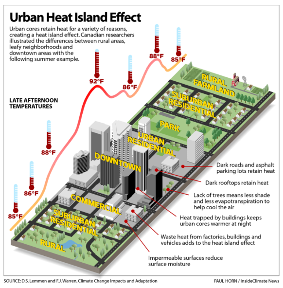
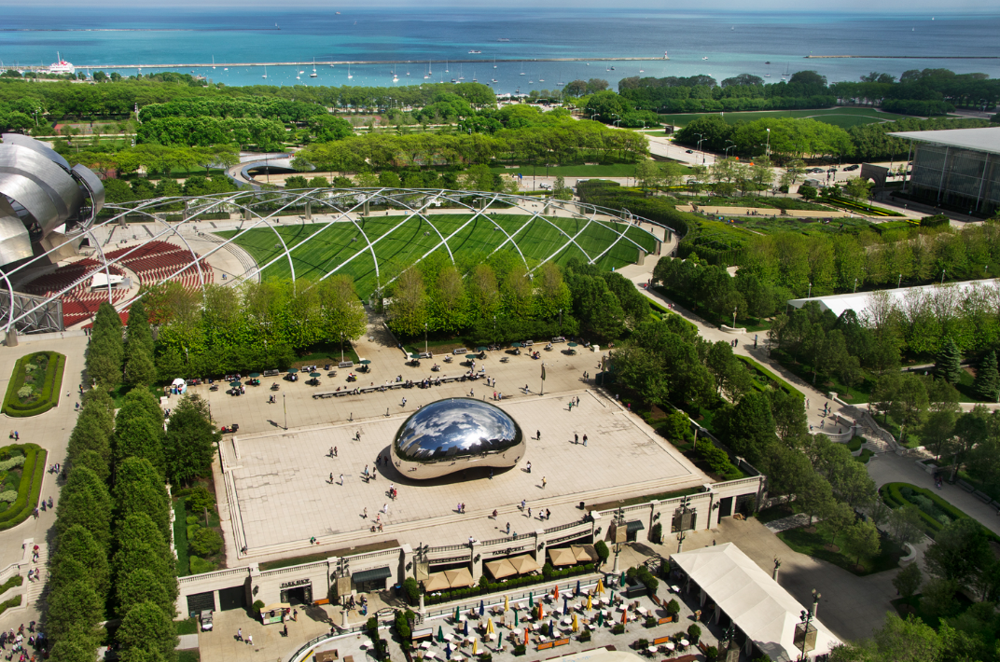
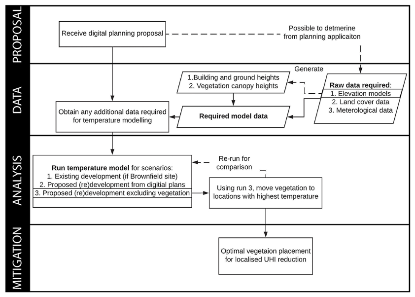

8 Temperature and Policy
8.1 Summary
The phenomenon known as a “urban heat island” (UHI) occurs when urban areas are significantly warmer than surrounding rural areas. This is because the built environment in cities absorbs and retains more heat than natural areas, resulting in higher temperatures in urban areas.
The heat-absorbing properties of concrete, asphalt, and other building materials, as well as the lack of vegetation in urban areas, all contribute to the urban heat island effect. Human activities such as transportation, industry, and energy consumption can all contribute to the heat island effect.

The urban heat island effect can have a number of negative consequences for cities, including increased energy consumption for air conditioning and other cooling measures, decreased air quality, and increased levels of heat-related illness and mortality. As a result, there is growing interest in strategies to reduce the urban heat island effect, such as increasing green space, implementing cool roof and pavement technologies, and promoting sustainable urban design.
There are several international initiatives and agreements aimed at promoting sustainable urban development and addressing the effects of climate change, which can help to mitigate the urban heat island effect indirectly. The United Nations’ Sustainable Development Goals (SDGs), for example, include a number of targets related to sustainable urbanisation, such as promoting sustainable and resilient infrastructure and reducing cities’ environmental impact. The Paris Climate Agreement, signed by 196 countries in 2015, includes provisions for reducing greenhouse gas emissions and promoting climate resilience in cities.
Governments and urban planners can implement a variety of policies and measures to mitigate the urban heat island effect at the national and local levels. Some cities, for example, have enacted regulations requiring new buildings to meet specific energy efficiency standards, or have implemented cool roof and pavement technologies to reduce heat absorption. Others have concentrated on expanding green spaces and promoting sustainable urban design, such as by constructing green roofs or incorporating more trees and vegetation into urban landscapes.
8.2 Applications
Taking specific example for metropolitan UHI reduction activities : Chicago’s green roof (Mr, n.d.).
Chicago is one city that has implemented measures to reduce the urban heat island effect, such as the use of green roofs.
A green roof, also known as a living roof, is a vegetation-covered roof. These roofs can help to reduce the urban heat island effect by providing natural cooling via evapotranspiration, which is the process by which plants absorb water from the soil and release it as vapour into the atmosphere.
In Chicago, the city has implemented a Green Roof programme that offers incentives to building owners who install green roofs. The programme offers grants to help offset the cost of green roof installation, as well as technical assistance and educational resources.

Since its inception in 2004, the programme has been successful in promoting the use of green roofs in the city, with over 600 green roofs installed. These green roofs cover more than 7 million square feet of rooftop space in the city and are expected to significantly reduce the urban heat island effect.
Aside from the Green Roof programme, Chicago has implemented other measures to reduce the urban heat island effect, such as tree planting and the use of cool pavement technologies. These initiatives are part of the city’s larger efforts to promote sustainable urban development and mitigate the effects of climate change on cities.
8.3 Reflection
This week, we learnt about the concept of urban heat islands, as well as global and local policy to address this issue. It’s fascinating to see the many initiatives and implementations that have taken place in cities all over the world. It’s worth considering whether policy (global) actually helps. What significant actions might cities take? What I’ve learned is that one city may be very different from another. We may build a new city, such as a new capital city in Indonesia, so we may consider planning a new city. However, many cities have already developed, so how do we rebuild this existing city while addressing the UHI issue?

I’m intrigued by MacLachlan’s framework for a data-driven process for localised UHI mitigation. We can use data from the temperature model, such as elevations, land cover, and meterological data (MacLachlan et al. 2021). Then we conform to the planning proposal. We can learn from other cities that have already implemented successful policies and initiatives.